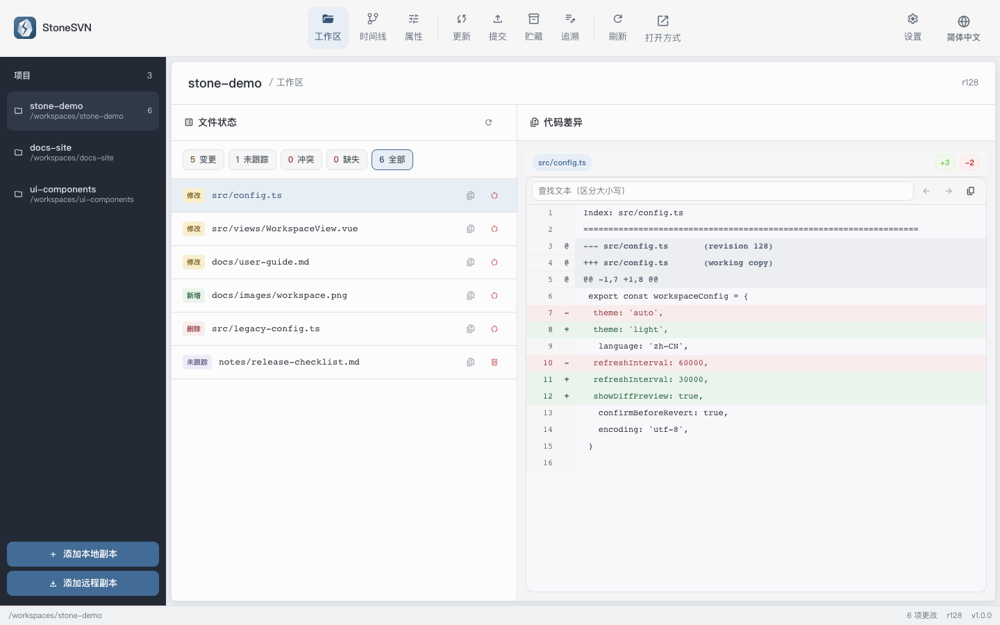
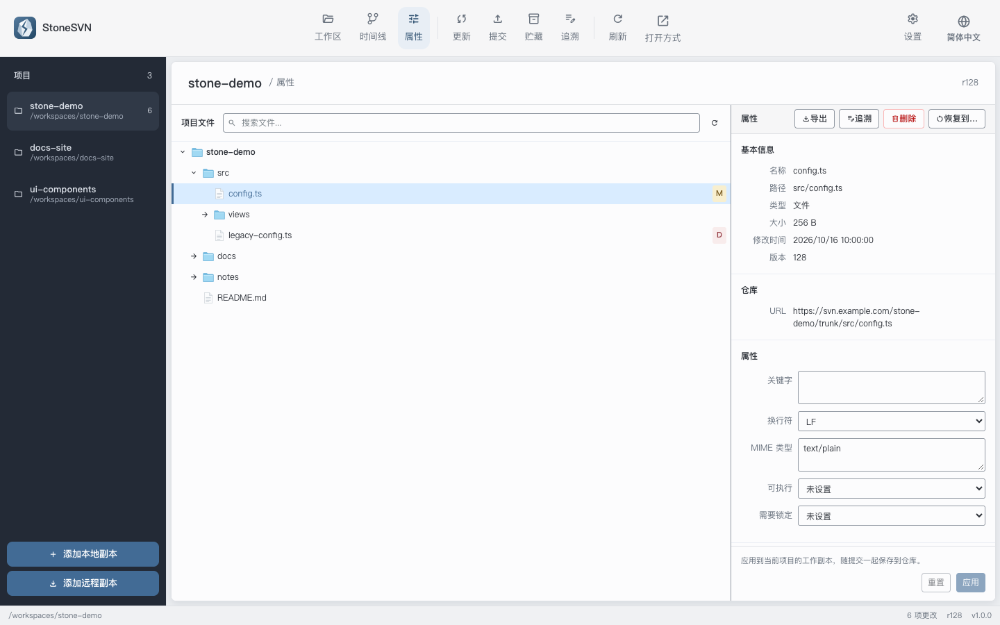

多个项目，一处掌握
在常驻项目栏中切换工作副本，拖动即可排序。当前会话按项目保留提交草稿、勾选和筛选条件，回来时接着做。
YOUR CHANGES. CLEARLY.
一个清晰、从容的 SVN 工作台。
查看变更、审阅差异、选择提交，让注意力回到代码本身。
Windows · macOS · Linux / 开源 · MIT 许可证

真实应用界面 · 截图使用虚构项目与示例数据
A CALMER WORKFLOW
从打开工作副本到提交修改，
把日常所需放在顺手的位置。
在常驻项目栏中切换工作副本，拖动即可排序。当前会话按项目保留提交草稿、勾选和筛选条件，回来时接着做。
集中查看文本差异与图片预览，按文件或目录选择提交范围。查看 Diff 后返回，勾选与提交信息依然保留。
将整个文件或选中的文本变更块贮藏到本地，稍后恢复到原工作副本。文本补丁也可以复制或导出。
THE DETAILS MATTER
浏览项目文件树、搜索文件、编辑 SVN 属性，或沿着提交时间线查看历史差异。日常维护，不必来回寻找入口。

MAKE YOURSELF AT HOME
同一个 StoneSVN，陪你在不同平台上工作。
免费使用，源码开放。
为你的 Mac 选择对应芯片版本
Apple 芯片 ↓ .dmgIntel 芯片 ↓ .dmg在「关于本机」中查看芯片类型适用于 x64 设备
下载安装程序 ↓ .exe下载 MSI 安装包 ↓ .msi安装后配置本机 SVN CLI适用于 x86_64 / amd64 设备
下载 AppImage ↓使用系统提供的 SVN 命令行工具当前版本 v1.0.3 · 更新日志与所有安装包 ↗
开始之前 StoneSVN 需要本机安装 SVN CLI。首次启动会自动查找，也可以在设置中指定路径。macOS 安装包尚未经过苹果公证；首次打开若被拦截，请在「系统设置 → 隐私与安全性」中选择「仍要打开」。查看说明 ↗
是的。StoneSVN 是采用 MIT 许可证的开源项目，可以免费使用。欢迎查看源码、反馈问题或参与贡献。
不需要。StoneSVN 调用本机 SVN CLI，可打开已有的 SVN 工作副本，也可以从远程仓库检出。首次使用建议先查看快速上手指南。
当前版本暂未提供通用 Merge、Switch 和冲突 Resolve 界面。这些操作需要通过其他 SVN 客户端或命令行完成，再回到 StoneSVN 刷新。文件历史浏览也不包含逐行 Blame。
支持简体中文、繁体中文、英语、日语和韩语，提供浅色与深色主题，可在设置中切换。